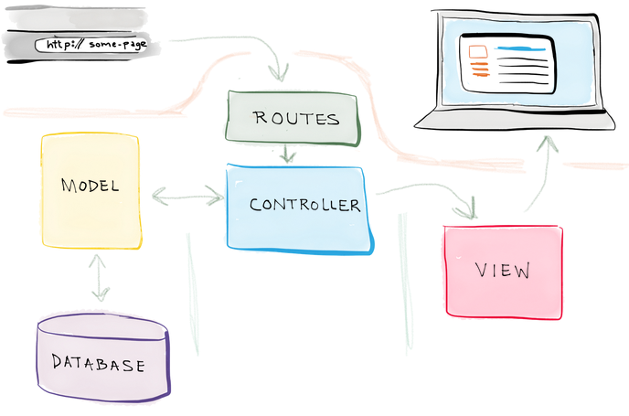
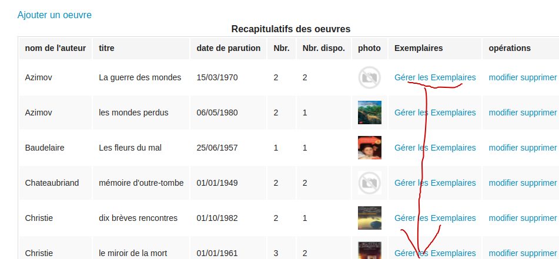

Évaluation du projet : ce projet se déroule durant 6 semaines
L’avancement et le sérieux durant cette activité sont prises en compte
semaine 1 :
* Réaliser le MCD (Modèle Conceptuel de Données) à partir du MR (Modèle Relationnel) sur le logiciel “looping”.
* Modifier le script SQL de looping, de façon à avoir un script SQL pour supprimer puis re-créer toutes les tables en étant conforme au modèle relationnel joint, utiliser ensuite le jeu de test en fin de TP sans le modifier.
* Compléter/Modifier le code (uniquement les requêtes SQL) du contrôleur de la table auteur de façon à faire fonctionner le CRUD de l’application sur cette table
Évaluation du MCD, du script SQL, du CRUD (Create/Read/Update/Delete) de la table “auteur”
semaine 2 :
* Compléter/Modifier le code (uniquement les requêtes SQL) du contrôleur de la table adherent de façon à faire fonctionner le CRUD de l’application sur cette table.
* Mettre en MVC (Modède/Vue/Controleur) le code dans les dossiers Modele et Controller (et validator) de façon à ce que le CRUD sur la table auteur soit toujours fonctionnel.
Évaluation du CRUD sur la table “adherent”,
Évaluation de la version MVC (Modède/Vue/Controleur) du CRUD de l’application sur la table auteur
Évaluation du MCD, du script SQL, du CRUD (Create/Read/Update/Delete) de la table “auteur”
semaine 3 :
* Compléter/Modifier le code (uniquement les requêtes SQL) du contrôleur de la table oeuvre de façon à faire fonctionner le CRUD de l’application sur cette table.
* Mettre en MVC (Modède/Vue/Controleur) le code dans les dossiers Modele et Controller (et validator) de façon à ce que le CRUD sur la table adherent soit toujours fonctionnel.
Évaluation du CRUD sur la table “oeuvre”,
Évaluation de la version MVC (Modède/Vue/Controleur) du CRUD de l’application sur la table adherent
Évaluation du CRUD sur la table “adherent”,
Évaluation de la version MVC (Modède/Vue/Controleur) du CRUD de l’application sur la table auteur
semaine 4 :
* Compléter/Modifier le code (uniquement les requêtes SQL) du contrôleur de la table exemplaire de façon à faire fonctionner le CRUD de l’application sur cette table * Mettre en MVC (Modède/Vue/Controleur) le code dans les dossiers Modele et Controller (et validator) de façon à ce que le CRUD sur la table oeuvre soit toujours fonctionnel.
Évaluation du CRUD sur la table “emprunt”,
Évaluation de la version MVC (Modède/Vue/Controleur) du CRUD de l’application sur la table exemplaire
Évaluation du CRUD sur la table “oeuvre”,
Évaluation de la version MVC (Modède/Vue/Controleur) du CRUD de l’application sur la table adherent
semaine 5 :
Compléter/Modifier le code (uniquement les requêtes SQL) du contrôleur de la table emprunt de façon à faire fonctionner les différentes fonctionnalités de l’application :
Mettre en MVC (Modède/Vue/Controleur) le code dans les dossiers Modele et Controller (et validator) de façon à ce que le CRUD sur la table exemplaire soit toujours fonctionnel.
Évaluation des différentes fonctionnalités de l’application sur la table “emprunt”
Évaluation de la version MVC (Modède/Vue/Controleur) du CRUD de l’application sur la table “exemplaire”
Évaluation de la version MVC (Modède/Vue/Controleur) du CRUD de l’application sur la table “emprunt” (fin de séance)
Évaluation du CRUD sur la table “exemplaire”,
Évaluation de la version MVC (Modède/Vue/Controleur) du CRUD de l’application sur la table “oeuvre”
semaine 6 (40mn) : dernière évaluation
semaine 6 : présentation de nodeJs + fin du projet
semaine 7 : correction partiel + fin du projet
ajouter le validator pour les dates dans “emprunt”
Dans adhérent : modifier la requête pour afficher le nombre de livre en retard pour un adhérent
* Finaliser l’application : MVC de toute l’application (table “emprunt”)
Évaluation des différentes fonctionnalités de l’application sur la table “emprunt”
Évaluation de la version MVC (Modède/Vue/Controleur) du CRUD de l’application sur la table “exemplaire”
Évaluation de la version MVC (Modède/Vue/Controleur) du CRUD de l’application sur la table “emprunt” (fin de séance)
Remarque importante :
Le code doit être validé sans être en version MVC et avec la version MVC sinon pénalité de 50%.
En cas d’absence : l’évaluation est gelée lors de son absence (50% de la note sur l’évaluation) ; l’étudiant doit prendre ses dispositions pour rattraper le retard et valider comme les autres son projet le jour de son retour (les 3 premières parties sont indépendantes).
à valider pendant la séance
à valider en début de séance (sinon considéré comme non validé)
On désire dans cet exercice, modéliser de façon simplifiée le système d’information d’emprunts de livres dans une bibliothèque.
L’objectif est de tester des requêtes (sur un terminal ou ‘datagrip’) avant de les utiliser dans une application python pour gérer les emprunts, les livres (exemplaires et oeuvres), les adhérents et les auteurs des livres.
Soit le modèle relationnel suivant :
adherent(id_adherent,nom,adresse,date_paiement)
auteur(id_auteur,nom, prenom)
exemplaire(id_exemplaire, etat, date_achat, prix, #oeuvre_id)
oeuvre(id_oeuvre ,titre, date_parution ,photo, #auteur_id)
emprunt(#adherent_id,#exemplaire_id, date_emprunt, date_retour)
L’état d’un exemplaire d’une oeuvre est une chaîne de caractères : Etat = neuf, bon , moyen ou mauvais
Les dates sont au format ISO : AAAA-MM-JJ dans la base de données mais sont affichées et manipulées au format JJ/MM/AAAA (dans les 4 premières interfaces).
La majorité des données sont contrôlées coté serveur
Établir le modèle conceptuel des données (MCD) associé à ce modèle relationnel sur le logiciel Looping.
En utilisant le script généré par looping :
Écrire dans un fichier script_tp5.sql le script de création des tables correspondant au modèle ci dessus.
Supprimer toutes les tables si elles existent.
Créer toutes les tables si elles n'existent pas.
(Utiliser les mots clés IF EXISTS lors de la suppression de la table et IF NOT EXISTS lors de la création des tables.)
Dans un terminal ou sur le logiciel ‘datagrip’, réaliser les requêtes suivantes :
+----------------+------------------------+----------+-----------+
| nom | prenom | id | nbrOeuvre |
+----------------+------------------------+----------+-----------+
| Azimov | Isaac | 14 | 2 |
| Baudelaire | Charles | 15 | 2 |
| Chateaubriand | François-René | 2 | 1 |
| Christie | Agatha | 1 | 4 |
| Daudet | Alphonse | 6 | 0 |
| De La Fontaine | Jean | 5 | 2 |
| Duras | Marguerite | 9 | 2 |
| Flaubert | Gustave | 3 | 1 |
| Highsmith | Patricia | 12 | 1 |
| Hugo | Victor | 7 | 0 |
| Kessel | Joseph | 8 | 0 |
| Kipling | Rudyard | 13 | 2 |
| Moliere | Jean-Baptiste Poquelin | 16 | 2 |
| Prévert | Jacques | 4 | 2 |
| Proust | Marcel | 10 | 0 |
| Zola | Émile | 11 | 3 |
+----------------+------------------------+----------+-----------+Requête 1_2 : ajouter un auteur avec 2 variables (paramètres)
Requête 1_4 : afficher uniquement l’enregistrement créé
Requête 1_5 : modifier l’ enregistrement en mettant par exemple en majuscule le nom et en minuscule le prénom de l’auteur
Requête 1_3 : supprimer l’enregistrement créé ci-dessus
Requête 1_6 : compter le nombre d’œuvres d’un auteur dont l’identifiant est passé en paramètre dans une variable, le résultat est une colonne unique de nom ‘nbrOeuvre’
Configurer le fichier de connexion à la base de données : connexion_db.py avec vos paramètres : host,login,password,database
Recopier les requêtes ci-dessus dans le fichier controllers/admin_auteur.py ; tester l’application pour afficher/ajouter/supprimer/modifier des enregistrements.
L’interface web (mini-projet) ci-dessous réutilise le résultat de cette requête .
Pour la suppression d’un auteur, décommenter le code sous la requête ; ce code permet de compter le nombre d’oeuvres d’un auteur. Si l’auteur possède des oeuvres, un message informe l’utilisateur qu’il ne peut pas supprimer cet auteur
%s dans les requêtes de l’applicationDans un terminal ou sur le logiciel datagrip, réaliser les requêtes suivantes :
Dans le logiciel :
La durée de cotisation étant de 1 an, donc 1 an après la date de cotisation, celle-ci n’est plus valide : un message affiche en rouge paiement en retard depuis le “date_cotisation au format JJ/MM/AAAA” .
Un petit symbole “⚠️” indique que l’adhérent n’est plus à jour dans sa cotisation et qu’il possède encore des livres (exemplaires) chez lui ; un message en vert paiement à renouveler indique à la bibliothécaire que l’adhérent devra renouveler sa cotisation si entre la date d’aujourd’hui et la date de cotisation il y a entre 11 et 12 mois.
Voir la capture d’écran dans le 2.2.3 de l’application python.
Pour réaliser cette requête :
Reprendre la requête ci dessus et ajouter le nombre d’emprunt en cours (faire une jointure à gauche sur emprunt). ATTENTION, la jointure est compliquée, il faut ajouter dans condition de la jointure AND emprunt.date_retour IS NULL
Reprendre la requête ci dessus et ajouter la date limite (datePaiementFutur) pour renouveler la cotisation annuelle (datePaiement + 1 an). Utiliser la fonction DATE_ADD(colonne, INTERVAL xx YEAR)
Reprendre la requête ci dessus et ajouter 2 drapeaux (flag) qui indiquent si l’adhérent est en retard sur sa cotisation ou devra bientôt renouveler sa cotisation.
CURRENT_DATE() ou NOW() ) est supérieure à la date de paiement + 1 an alors le drapeau “retard” a pour valeur 1 sinon 0CURRENT_DATE() ou NOW() ) est supérieure à la date de paiement + 11 mois alors le drapeau “retardProche” a pour valeur 1 sinon 0exemple de colonne : IF(CURRENT_DATE()>DATE_ADD(colonne, INTERVAL xx YEAR/MONTH),1,0) as colonne_flag
* Reprendre la requête ci dessus et calculer le nombre d’exemplaire à rendre ( dont la date d’emprunt + 3 mois est supérieure à la date d’aujourd’hui ) alors l’entier “nbre_empr_retard” a pour valeur la somme de IF(CURRENT_DATE()>DATE_ADD(empr.date_emprunt, INTERVAL 3 MONTH),1,0)
+-----------+-------------+---------------+-------------+-------------+---------------------+--------+---------------+
| nom | adresse | date_paiement | id_adherent | nbr_emprunt | date_paiement_futur | retard | retard_proche |
+-----------+-------------+---------------+-------------+-------------+---------------------+--------+---------------+
| asproitis | grenoble | 2022-12-04 | 8 | 0 | 2023-12-04 | 0 | 0 |
| axelrad | sevenans | 2022-01-12 | 3 | 4 | 2023-01-12 | 1 | 1 |
| bedez | hericourt | 2022-04-17 | 4 | 3 | 2023-04-17 | 0 | 1 |
| berger | les glacis | 2013-11-03 | 5 | 0 | 2014-11-03 | 1 | 1 |
| billot | Montbeliard | 2022-11-03 | 1 | 0 | 2023-11-03 | 0 | 0 |
| bonilla | sochaux | 2022-02-17 | 7 | 0 | 2023-02-17 | 1 | 1 |
| cambot | sevenans | 2022-12-15 | 6 | 0 | 2023-12-15 | 0 | 0 |
| dupont | grenoble | 2022-03-14 | 10 | 0 | 2023-03-14 | 1 | 1 |
| durant | belfort | 2022-12-16 | 11 | 0 | 2023-12-16 | 0 | 0 |
| lauvernay | sevenans | 2022-06-13 | 2 | 5 | 2023-06-13 | 0 | 0 |
| pereira | danjoutin | 2022-11-03 | 9 | 2 | 2023-11-03 | 0 | 0 |
| piton | belfort | 2022-11-03 | 12 | 0 | 2023-11-03 | 0 | 0 |
+-----------+-------------+---------------+-------------+-------------+---------------------+--------+---------------+
Requête 2_2 : ajouter un adhérent avec les informations du formulaire
Requête 2_4 : afficher uniquement l’enregistrement créé (pour la modification)
Requête 2_5 : modifier l’ enregistrement avec les informations du formulaire
Requête 2_3 : supprimer l’enregistrement créé ci-dessus
Requête 2_6 : compter le nombre d’emprunt d’un adhérent dont l’identifiant est passé en paramètre dans une variable, le résultat est une colonne unique de nom ‘nb_emprunts’ ; Dans le code si cette variable est différente de 0, la suppression est annulée et un message informe l’utilisateur que ce n’est pas possible.
Recopier les requêtes ci-dessus controllers/admin_adherent.py ; tester l’application pour afficher/ajouter/supprimer/modifier des enregistrements
L’interface web (mini-projet) ci-dessous réutilise le résultat de cette requête
Dans le dossier “models”, il faudrait placer tous les éléments de code qui interagissent avec la base de données.
L’objectif est de se rapprocher le plus possible d’une application MVC (commune à tous les langages)
Principe du MVC

L’objectif est de compléter les fonctions dans les fichiers du dossier models et de supprimer tous les accès à la base de données dans les contrôleurs.
étapes :
Les validateurs (validator) servent à vérifier le contenu de toutes les entrées (INPUT) coté serveur lorsque l’on valide un formulaire pour informer l’utilisateur si une donnée en entrée n’est pas valide.
La vérification coté client avec l’HTML5 ou du code javascript n’est pas suffisante : il y a des problèmes liés aux failles de sécurité (petite présentation en TP), des problèmes possibles liés à la compatibilité des anciennes versions de navigateurs.
Dans une API, le principe est le même.
Utiliser le fichier validator_auteur.py dans le dossier validator, déplacer le code du validateur dans ce fichier.
L’objectif est de mettre les logiques du code dans des dossiers différents.
tp5_img1_4 tp5_1_23_img1.png tp5_1_23_img2.png
Dans un terminal ou sur le logiciel datagrip, réaliser les requêtes suivantes :
Requête 3_1 : Afficher les références des œuvres et le nombre d’exemplaires, si la date est NULL mettre une chaîne de caractères vide à la place de la valeur NULL.
la dernière colonne est difficile à réaliser, il faut calculer si les exemplaires sont disponibles, une possibilité est d’ajouter dans une deuxième jointure sur la table exemplaire avec une condition
LEFT JOIN exemplaire AS E2 ON E2.id = E1.id
AND E2.id NOT IN (SELECT emprunt.exemplaire_id FROM emprunt WHERE emprunt.date_retour IS NULL)résultat
+----------------+-------------------------+-----------+-------------------+---------------+----------------+
| nom | titre | id_oeuvre | date_parution_iso | nb_exemplaire | nb_exemp_dispo |
+----------------+-------------------------+-----------+-------------------+---------------+----------------+
| Azimov | La guerre des mondes | 15 | 1970-03-15 | 2 | 2 |
| Azimov | les mondes perdus | 14 | 1980-05-06 | 2 | 1 |
| Baudelaire | Les fleurs du mal | 12 | 1957-06-25 | 1 | 1 |
| Baudelaire | petits poèmes en prose | 13 | 1969-01-01 | 2 | 2 |
| Chateaubriand | mémoire d'outre-tombe | 7 | 1949-01-01 | 2 | 1 |
| Christie | dix brèves rencontres | 3 | 1982-10-01 | 2 | 1 |
| Christie | le miroir de la mort | 4 | 1961-01-01 | 3 | 2 |
| Christie | le retour de Poirot | 1 | 1960-02-12 | 4 | 2 |
| Christie | Poirot quitte la scène | 2 | 1975-05-01 | 2 | 0 |
| De La Fontaine | Le triomphe de l'amour | 18 | 1980-05-06 | 0 | 0 |
| De La Fontaine | Les fables | 17 | 1694-01-01 | 2 | 2 |
| Duras | le marin de Gibraltar | 21 | 1952-07-12 | 0 | 0 |
| Duras | un amour de swam | 9 | 2004-06-01 | 1 | 1 |
| Flaubert | Madame de Bovary | 8 | 1956-12-15 | 1 | 1 |
| Highsmith | une créature de rêve | 6 | 1992-02-01 | 2 | 1 |
| Kipling | kim | 20 | 1901-07-01 | 3 | 3 |
| Kipling | le livre de la jungle | 19 | 1968-12-11 | 5 | 3 |
| Moliere | le misanthrope | 11 | 1666-01-01 | 1 | 1 |
| Moliere | les femmes savantes | 10 | 1672-03-16 | 4 | 2 |
| Prévert | spectacles | 16 | 1948-05-12 | 1 | 1 |
| Zola | j'accuse | 23 | 1898-01-13 | 0 | 0 |
| Zola | la terre | 24 | 1887-01-01 | 0 | 0 |
| Zola | l’assommoir | 22 | 1976-01-01 | 0 | 0 |
+----------------+-------------------------+-----------+-------------------+---------------+----------------+
+----------------+-------------------------+----+------------------+-------------------------+--------------+-------------+---------------+
| nom | titre | id | date_parution_en | photo | nbExemplaire | nombreDispo | date_parution |
+----------------+-------------------------+----+------------------+-------------------------+--------------+-------------+---------------+
| Azimov | La guerre des mondes | 15 | 1970-03-15 | | 2 | 2 | 15/03/1970 |
| Azimov | les mondes perdus | 14 | 1980-05-06 | lesMondesPerdus.jpg | 2 | 1 | 06/05/1980 |
| Baudelaire | Les fleurs du mal | 12 | 1957-06-25 | lesFleursDuMal.jpg | 1 | 1 | 25/06/1957 |
| Baudelaire | petits poèmes en prose | 13 | 1969-01-01 | | 2 | 2 | 01/01/1969 |
| Chateaubriand | mémoire d'outre-tombe | 7 | 1949-01-01 | | 2 | 1 | 01/01/1949 |
| Christie | dix brèves rencontres | 3 | 1982-10-01 | dixBrevesRencontres.jpg | 2 | 1 | 01/10/1982 |
| Christie | le miroir de la mort | 4 | 1961-01-01 | leMiroirDuMort.jpeg | 3 | 2 | 01/01/1961 |
| Christie | le retour de Poirot | 1 | 1960-02-12 | leRetourDePoirot.jpg | 4 | 2 | 12/02/1960 |
| Christie | Poirot quitte la scène | 2 | 1975-05-01 | | 2 | 0 | 01/05/1975 |
| De La Fontaine | Le triomphe de l'amour | 18 | 1980-05-06 | | 0 | 0 | 06/05/1980 |
| De La Fontaine | Les fables | 17 | 1694-01-01 | | 2 | 2 | 01/01/1694 |
| Duras | le marin de Gibraltar | 21 | 1952-07-12 | | 0 | 0 | 12/07/1952 |
| Duras | un amour de swam | 9 | 2004-06-01 | unAmourDeSwann.jpeg | 1 | 1 | 01/06/2004 |
| Flaubert | Madame de Bovary | 8 | 1956-12-15 | | 1 | 1 | 15/12/1956 |
| Highsmith | une créature de rêve | 6 | 1992-02-01 | | 2 | 1 | 01/02/1992 |
| Kipling | kim | 20 | 1901-07-01 | | 3 | 3 | 01/07/1901 |
| Kipling | le livre de la jungle | 19 | 1968-12-11 | | 5 | 3 | 11/12/1968 |
| Moliere | le misanthrope | 11 | 1666-01-01 | | 1 | 1 | 01/01/1666 |
| Moliere | les femmes savantes | 10 | 1672-03-16 | | 4 | 2 | 16/03/1672 |
| Prévert | spectacles | 16 | 1948-05-12 | | 1 | 1 | 12/05/1948 |
| Zola | j'accuse | 23 | 1898-01-13 | | 0 | 0 | 13/01/1898 |
| Zola | la terre | 24 | 1887-01-01 | | 0 | 0 | 01/01/1887 |
| Zola | l’assommoir | 22 | 1976-01-01 | | 0 | 0 | 01/01/1976 |
+----------------+-------------------------+----+------------------+-------------------------+--------------+-------------+---------------+
Requête 3_2 : ajouter une oeuvre avec les informations du formulaire
Requête 3_4 : afficher l’enregistrement oeuvre dont l’identifiant est passé en paramètre (pour la modification)
Requête 3_5 : modifier l’ enregistrement créé ci-dessus
Requête 3_3 : supprimer l’enregistrement créé ci-dessus
Requête 3_6 : contenu de la liste déroulante : afficher l’identifiant et le nom de tous les auteurs, trier les enregistrements par nom d’auteur
Requête 3_7 : compter le nombre d’exemplaires d’une oeuvre dont l’identifiant est passé en paramètre dans une variable, le résultat est une colonne unique de nom ‘nb_exemplaires’
Recopier les requêtes ci-dessus controllers/admin_oeuvre.py ; tester l’application pour afficher/ajouter/supprimer/modifier des enregistrements
L’interface web (mini-projet) ci-dessous réutilise le résultat de cette requête
Modification du code, les dates sont au format “YYYY-MM-DD” par défaut. Le filtre dans jinja {{ adherent.datePaiement.strftime('%d-%m-%Y') }} ne fonctionne pas (faire un essai). La plage des dates est limitée (rappel : Quelle est la différence entre les types DATETIME et TIMESTAMP ? (voir bug de l’an 2038).
Renommer la colonne date_parution en date_parution_en Modifier la requête pour retourner une colonne supplémentaire : date_parution qui met la date de parution au format JJ/MM/AAAA : utiliser les fonctions CONCAT, DAY, MONTH, YEAR, CAST, LPAD (faire des recherches sur internet)
Dans le logiciel qui gère la bibliothèque, la gestion des exemplaires est différente des autres tables.
Le lien “gérer les exemplaires” depuis l’interface d’affichage des oeuvres permet de gérer les exemplaires uniquement de l’oeuvre sélectionnée. Chaque requête par la suite va faire référence au numéro de l’oeuvre passé dans le lien.

Dans un terminal ou sur le logiciel datagrip, réaliser les requêtes suivantes :
Afficher les informations communes à tous les exemplaires :
Requête 4_1 : Afficher pour une oeuvre : nom de l’auteur, Titre , date de parution, nombre d’exemplaires dans la bibliothèque (présents) ainsi que le nombre d’exemplaires total, l’identifiant de l’oeuvre (renommé noOeuvre)
exemple de résultat pour l’oeuvre d’identifiant 1 :
+-----------+---------------------+-----------+---------------+---------------+----------------+
| nomAuteur | titre | id_oeuvre | date_parution | nb_exemplaire | nb_exemp_dispo |
+-----------+---------------------+-----------+---------------+---------------+----------------+
| Christie | le retour de Poirot | 1 | 1960-02-12 | 4 | 2 |
+-----------+---------------------+-----------+---------------+---------------+----------------+
exemple de résultat pour l’oeuvre d’identifiant 14 :
+-----------+-------------------+-----------+---------------+---------------+----------------+
| nomAuteur | titre | id_oeuvre | date_parution | nb_exemplaire | nb_exemp_dispo |
+-----------+-------------------+-----------+---------------+---------------+----------------+
| Azimov | les mondes perdus | 14 | 1980-05-06 | 2 | 1 |
+-----------+-------------------+-----------+---------------+---------------+----------------+
exemple de résultat pour l’oeuvre d’identifiant 1 :
+---------------+-------+------------+-------+---------------------+-----------+---------------+------------------+---------+
| id_exemplaire | etat | date_achat | prix | titre | id_oeuvre | date_parution | exemplaire_dispo | present |
+---------------+-------+------------+-------+---------------------+-----------+---------------+------------------+---------+
| 4 | BON | 2015-01-11 | 10.00 | le retour de Poirot | 1 | 1960-02-12 | NULL | abs |
| 3 | MOYEN | 2021-05-26 | 12.00 | le retour de Poirot | 1 | 1960-02-12 | NULL | abs |
| 2 | MOYEN | 2015-09-28 | 12.50 | le retour de Poirot | 1 | 1960-02-12 | 2 | present |
| 1 | BON | 2021-08-25 | 13.50 | le retour de Poirot | 1 | 1960-02-12 | 1 | present |
+---------------+-------+------------+-------+---------------------+-----------+---------------+------------------+---------+
exemple de résultat pour l’oeuvre d’identifiant 14 :
+---------------+---------+------------+-------+-------------------+-----------+---------------+------------------+---------+
| id_exemplaire | etat | date_achat | prix | titre | id_oeuvre | date_parution | exemplaire_dispo | present |
+---------------+---------+------------+-------+-------------------+-----------+---------------+------------------+---------+
| 27 | MOYEN | 2015-12-26 | 13.00 | les mondes perdus | 14 | 1980-05-06 | NULL | abs |
| 26 | MAUVAIS | 2022-01-23 | 26.00 | les mondes perdus | 14 | 1980-05-06 | 26 | present |
+---------------+---------+------------+-------+-------------------+-----------+---------------+------------------+---------+
exemple avec l’oeuvre 1
+----------+---------------------+-----------+---------------+
| nom | titre | id_oeuvre | date_parution |
+----------+---------------------+-----------+---------------+
| Christie | le retour de Poirot | 1 | 1960-02-12 |
+----------+---------------------+-----------+---------------+
Pour modifier un enregistrement :
Requête 4_10 : Afficher pour une oeuvre (un exemplaire d’une oeuvre) : nom de l’auteur, Titre , date de parution, l’identifiant de l’oeuvre (renommé noOeuvre) à partir de l’identifiant de l’exemplaire passé en paramètre
Requête 4_11 : afficher toutes les colonnes de l’enregistrement (à partir du numéro d’exemplaire)
Requête 4_12 : modifier l’ enregistrement en mettant par exemple en majuscule le nom et en minuscule l’adresse de l’adhérent
Pour supprimer un enregistrement :
Requête 4_8 : supprimer l’enregistrement créé ci-dessus
Requête 4_7 : compter le nombre d’emprunts d’un exemplaire dont l’identifiant est passé en paramètre dans une variable, le résultat est une colonne unique de nom ‘nb_emprunts’
Requête 4_9 : retrouver (afficher) le numero d’oeuvre à partir de l’identifiant de l’exemplaire pour faire une redirection sur la bonne route : '/admin/exemplaire/show?noOeuvre='+oeuvre_id
Recopier les requêtes ci-dessus controllers/admin_exemplaire.py ; tester l’application pour afficher/ajouter/supprimer/modifier des enregistrements
L’interface web (mini-projet) ci-dessous réutilise le résultat de cette requête
Méthodes nécessaires pour faire l’application
Dans le fichier controllers/admin_emprunt.py, pour sélectionner des adhérents, il y a 2 cas :
Liste des adhérents qui peuvent emprunter un exemplaire : (find_adherents_emprunter)
Condition pour emprunter un livre (exemplaire) :
Trier les adhérents par nom
exemple de résultat
+----+-----------+---------------+--------------------------------------------------------+--------------------------------------------------------+------------+------------------+-------------+------------+
| id | nom | date_paiement | group_concat(empr.date_emprunt) | liste_retour | nbrEmprunt | retardCotisation | listeRetard | nbreRetard |
+----+-----------+---------------+--------------------------------------------------------+--------------------------------------------------------+------------+------------------+-------------+------------+
| 8 | asproitis | 2022-12-04 | NULL | NULL | 0 | 0 | 0 | 0 |
| 1 | billot | 2022-11-03 | NULL | NULL | 0 | 0 | 0 | 0 |
| 6 | cambot | 2022-12-15 | NULL | NULL | 0 | 0 | 0 | 0 |
| 10 | dupont | 2022-03-14 | NULL | NULL | 0 | 0 | 0 | 0 |
| 11 | durant | 2022-12-16 | NULL | NULL | 0 | 0 | 0 | 0 |
| 2 | lauvernay | 2022-06-13 | 2022-12-01,2022-12-15,2022-12-30,2023-02-26,2023-02-11 | 2022-12-01,2022-12-15,2022-12-30,2023-02-26,2023-02-11 | 5 | 0 | 0,0,0,0,0 | 0 |
| 9 | pereira | 2022-11-03 | 2023-02-22,2023-01-30 | 2023-02-22,2023-01-30 | 2 | 0 | 0,0 | 0 |
| 12 | piton | 2022-11-03 | NULL | NULL | 0 | 0 | 0 | 0 |
+----+-----------+---------------+--------------------------------------------------------+--------------------------------------------------------+------------+------------------+-------------+------------+
Lorsqu’un adhérent rend des livres, utiliser
Liste des adhérents (distincts) ayant empruntés un exemplaire d’un livre (les exemplaires ne sont pas encore rendus) (find_adherents_rendre) ; Trier les adhérents par nom
exemple de résultat
+----+-----------+
| id | nom |
+----+-----------+
| 3 | axelrad |
| 4 | bedez |
| 2 | lauvernay |
+----+-----------+Lors d’un emprunt :
Nombre d’exemplaire en retard pour un adhérent (find_adherent_nbre_emprunt_retardDatePaiment(idAdherent))
Pour l’adhérent dont l’identifiant est passé en paramètre, retourner le nombre d’emprunt et le nombre d’emprunt en retard, exemple pour l’adhérent 4 (bedez)
+------------+--------+
| nbrEmprunt | retard |
+------------+--------+
| 3 | 0 |
+------------+--------++----------------+------------------------+----------+--------------+
| nomAuteur | titre | noOeuvre | noExemplaire |
+----------------+------------------------+----------+--------------+
| Azimov | La guerre des mondes | 15 | 28 |
| Azimov | La guerre des mondes | 15 | 29 |
| Azimov | les mondes perdus | 14 | 26 |
| Baudelaire | Les fleurs du mal | 12 | 23 |
| Chateaubriand | mémoire d'outre-tombe | 7 | 14 |
| Christie | dix brèves rencontres | 3 | 7 |
| Christie | le miroir de la mort | 4 | 10 |
| Christie | le miroir de la mort | 4 | 11 |
| Christie | le retour de Poirot | 1 | 1 |
| Christie | le retour de Poirot | 1 | 2 |
| De La Fontaine | Les fables | 17 | 31 |
| De La Fontaine | Les fables | 17 | 32 |
| Duras | un amour de swam | 9 | 17 |
| Flaubert | Madame de Bovary | 8 | 16 |
| Highsmith | une créature de rêve | 6 | 12 |
| Kipling | kim | 20 | 40 |
| Kipling | kim | 20 | 38 |
| Kipling | kim | 20 | 39 |
| Kipling | le livre de la jungle | 19 | 34 |
| Kipling | le livre de la jungle | 19 | 35 |
| Kipling | le livre de la jungle | 19 | 36 |
| Moliere | le misanthrope | 11 | 22 |
| Moliere | les femmes savantes | 10 | 20 |
| Moliere | les femmes savantes | 10 | 21 |
| Prévert | spectacles | 16 | 30 |
+----------------+------------------------+----------+--------------+Liste des emprunts (livre non rendu) par un adhérent : idAdherent(id), noExemplaire(id), titre, nomAdherent, date_emprunt, date_retour, nombre de jours entre la date d’aujourd’hui (curdate) et la date_emprunt (find_emprunt_data_adherent(idAdherent))
exemple pour l’adhérent 4 (bedez)
+------------+--------------+-------------------------+-------+--------------+-------------+----------------+
| idAdherent | noExemplaire | titre | nom | date_emprunt | date_retour | nbJoursEmprunt |
+------------+--------------+-------------------------+-------+--------------+-------------+----------------+
| 4 | 27 | les mondes perdus | bedez | 2023-02-22 | NULL | -1 |
| 4 | 6 | Poirot quitte la scène | bedez | 2023-01-25 | NULL | 27 |
| 4 | 19 | les femmes savantes | bedez | 2022-09-21 | NULL | 153 |
+------------+--------------+-------------------------+-------+--------------+-------------+----------------+Requête 5_6 : requête pour ajouter un emprunt
Requête 5_7 : requête pour afficher des informations sur l’adhérent sélectionné :
+----+-------+-----------+--------------+
| id | nom | adresse | datePaiement |
+----+-------+-----------+--------------+
| 4 | bedez | hericourt | 2022-04-17 |
+----+-------+-----------+--------------+Les autres requêtes sont identiques
Recopier les requêtes ci-dessus controllers/admin_emprunt.py ; tester l’application pour emprunter et rendre des livres des enregistrements
L’interface web (mini-projet) ci-dessous réutilise le résultat de ces requêtes
Requête 5_9 : requête pour sélectionner un emprunt avec une clé primaire (pas de jointure, uniquement la table emprunt)
Requête 5_10 : requête pour supprimer un emprunt avec une clé primaire
Requête 5_11 : requête pour sélectionner tous les emprunts (trié par nom d’adhérent et date d’emprunt)
Liste des emprunts idAdherent(id), idExemplaire(id), titre, nomAdherent , date_emprunt, date_retour , nombre de jours entre la date d’aujourd’hui (curdate) et la date_emprunt, si le paramètre idAdherent est vide, afficher tous les emprunts (find_adherents_select_emprunts(idAdherent))
+------------+--------------+-------------------------+-------------+-------------+------------+----------------+
| idAdherent | idExemplaire | titre | nomAdherent | dateEmprunt | dateRetour | nbJoursEmprunt |
+------------+--------------+-------------------------+-------------+-------------+------------+----------------+
| 8 | 2 | le retour de Poirot | asproitis | 2022-11-21 | 2022-11-28 | 90 |
| 8 | 9 | le miroir de la mort | asproitis | 2022-07-26 | 2022-09-22 | 208 |
| 3 | 7 | dix brèves rencontres | axelrad | 2023-02-22 | 2023-03-29 | -3 |
| 3 | 33 | le livre de la jungle | axelrad | 2023-01-30 | NULL | 20 |
| 3 | 11 | le miroir de la mort | axelrad | 2023-01-26 | 2023-02-21 | 24 |
| 3 | 9 | le miroir de la mort | axelrad | 2023-01-25 | NULL | 25 |
| 3 | 13 | une créature de rêve | axelrad | 2023-01-04 | NULL | 46 |
| 3 | 5 | Poirot quitte la scène | axelrad | 2022-11-23 | 2022-12-24 | 88 |
| 3 | 40 | kim | axelrad | 2022-11-23 | 2022-12-24 | 88 |
| 3 | 3 | le retour de Poirot | axelrad | 2022-09-13 | NULL | 159 |
| 3 | 5 | Poirot quitte la scène | axelrad | 2022-07-26 | 2022-08-23 | 208 |
| 4 | 27 | les mondes perdus | bedez | 2023-02-22 | NULL | -3 |
| 4 | 6 | Poirot quitte la scène | bedez | 2023-01-25 | NULL | 25 |
| 4 | 34 | le livre de la jungle | bedez | 2023-01-23 | 2023-02-20 | 27 |
| 4 | 6 | Poirot quitte la scène | bedez | 2023-01-22 | 2023-01-23 | 28 |
| 4 | 19 | les femmes savantes | bedez | 2022-09-21 | NULL | 151 |
| 5 | 40 | kim | berger | 2022-07-25 | 2022-09-22 | 209 |
| 7 | 2 | le retour de Poirot | bonilla | 2022-10-21 | 2022-10-28 | 121 |
| 7 | 38 | kim | bonilla | 2022-07-26 | 2022-10-22 | 208 |
| 6 | 15 | mémoire d'outre-tombe | cambot | 2022-09-23 | 2022-09-26 | 149 |
| 6 | 2 | le retour de Poirot | cambot | 2022-09-21 | 2022-09-28 | 151 |
| 2 | 19 | les femmes savantes | lauvernay | 2023-02-26 | NULL | -7 |
| 2 | 37 | le livre de la jungle | lauvernay | 2023-02-11 | NULL | 8 |
| 2 | 40 | kim | lauvernay | 2023-01-23 | 2023-02-23 | 27 |
| 2 | 8 | dix brèves rencontres | lauvernay | 2022-12-30 | NULL | 51 |
| 2 | 5 | Poirot quitte la scène | lauvernay | 2022-12-15 | NULL | 66 |
| 2 | 4 | le retour de Poirot | lauvernay | 2022-12-01 | NULL | 80 |
| 2 | 18 | les femmes savantes | lauvernay | 2022-09-23 | 2022-10-28 | 149 |
| 2 | 5 | Poirot quitte la scène | lauvernay | 2022-08-23 | 2022-09-23 | 180 |
| 2 | 35 | le livre de la jungle | lauvernay | 2022-07-13 | 2022-09-21 | 221 |
+------------+--------------+-------------------------+-------------+-------------+------------+----------------+
Recopier les requêtes ci-dessus controllers/admin_emprunt.py ; tester l’application pour supprimer des enregistrements
L’interface web (mini-projet) ci-dessous réutilise le résultat de ces requêtes
Afficher le nom des adhérents qui ont emprunté un exemplaire d’un livre et qui ne l’ont pas rendu, afficher la date de retour prévue maximum (90 jours) …, voici le détail des informations nécessaires :
idAdherent(id), idExemplaire(id), titre, nomAdherent, date_emprunt, date_retour
, nbre de jours entre la date d’aujourd’hui (curdate) et la date_emprunt
, nbre de jours entre la date d’aujourd’hui (curdate) et la date_emprunt+90j
, date limite d’emprunt
, un booleen flagRetard egal à 1 si la date d’emprunt est supérieure à la date d’aujourd’hui + 90 jours
, un booleen flagPenalite egal à 1 si la date d’emprunt est supérieure à la date d’aujourd’hui + 120 jours
, la Pénalité : (nombre de jours de retard-120j) * 0,5 si c’est inférieur à 25€ sinon 25 €
+------------+--------------+---------------------+---------+--------------+-------------+----------------+--------+--------------------+------------+--------------+-------+
| idAdherent | idExemplaire | titre | nom | date_emprunt | date_retour | nbJoursEmprunt | RETARD | dateRenduTheorique | flagRetard | flagPenalite | dette |
+------------+--------------+---------------------+---------+--------------+-------------+----------------+--------+--------------------+------------+--------------+-------+
| 3 | 3 | le retour de Poirot | axelrad | 2022-09-13 | NULL | 159 | 69 | 2022-12-12 | 1 | 1 | 19.5 |
| 4 | 19 | les femmes savantes | bedez | 2022-09-21 | NULL | 151 | 61 | 2022-12-20 | 1 | 1 | 15.5 |
+------------+--------------+---------------------+---------+--------------+-------------+----------------+--------+--------------------+------------+--------------+-------+Recopier les requêtes ci-dessus controllers/admin_emprunt.py ; tester l’application pour afficher/ajouter/supprimer/modifier des enregistrements
L’interface web (mini-projet) ci-dessous réutilise le résultat de ces requêtes
INSERT INTO auteur (id_auteur, nom, prenom) VALUES
(1, 'Christie', 'Agatha'),
(2, 'Chateaubriand', 'François-René'),
(3, 'Flaubert', 'Gustave'),
(4, 'Prévert', 'Jacques'),
(5, 'De La Fontaine', 'Jean'),
(6, 'Daudet', 'Alphonse'),
(7, 'Hugo', 'Victor'),
(8, 'Kessel', 'Joseph'),
(9, 'Duras', 'Marguerite'),
(10, 'Proust', 'Marcel'),
(11, 'Zola', 'Émile'),
(12, 'Highsmith', 'Patricia'),
(13, 'Kipling', 'Rudyard'),
(14, 'Azimov', 'Isaac'),
(15, 'Baudelaire', 'Charles');
INSERT INTO auteur (id_auteur, nom, prenom) VALUE
(16, 'Moliere', 'Jean-Baptiste Poquelin');
/* 23 oeuvres */
/* pas de 5*/
INSERT INTO oeuvre (id_oeuvre, titre, date_parution, photo, auteur_id) VALUES
(1, 'le retour de Poirot', '1960-02-12', 'leRetourDePoirot.jpg', 1);
INSERT INTO oeuvre (id_oeuvre, titre, date_parution, photo, auteur_id) VALUES
(2, 'Poirot quitte la scène', '1975-05-01', '', 1);
INSERT INTO oeuvre (id_oeuvre, titre, date_parution, photo, auteur_id) VALUES
(3, 'dix brèves rencontres', '1982-10-01', 'dixBrevesRencontres.jpg', 1),
(4, 'le miroir de la mort', '1961-01-01', 'leMiroirDuMort.jpeg', 1),
(6, 'une créature de rêve', '1992-02-01', '', 12),
(7, "mémoire d\'outre-tombe", '1949-01-01', '', 2),
(8, 'Madame de Bovary', '1956-12-15', '', 3);
INSERT INTO oeuvre (id_oeuvre, titre, date_parution, photo, auteur_id) VALUES
(9, 'un amour de swam', '2004-06-01', 'unAmourDeSwann.jpeg', 9),
(10, 'les femmes savantes', '1672-03-16', '', 16),
(11, 'le misanthrope', '1666-01-01', '', 16),
(12, 'Les fleurs du mal', '1957-06-25', 'lesFleursDuMal.jpg', 15),
(13, 'petits poèmes en prose', '1969-01-01', NULL, 15),
(14, 'les mondes perdus', '1980-05-06', 'lesMondesPerdus.jpg', 14),
(15, 'La guerre des mondes', '1970-03-15', '', 14),
(16, 'spectacles', '1948-05-12', '', 4),
(17, 'Les fables', '1694-01-01', '', 5);
INSERT INTO oeuvre (id_oeuvre, titre, date_parution, photo, auteur_id) VALUES
(18, "Le triomphe de l\'amour", '1980-05-06', '', 5),
(19, 'le livre de la jungle', '1968-12-11', '', 13),
(20, 'kim', '1901-07-01', '', 13),
(21, 'le marin de Gibraltar', '1952-07-12', '', 9),
(22, 'l’assommoir', '1976-01-01', '', 11),
(23, "j\'accuse", '1898-01-13', '', 11),
(24, 'la terre', '1887-01-01', '', 11);
INSERT INTO exemplaire (id_exemplaire, etat, date_achat, prix, oeuvre_id) VALUES
(1, 'BON', '2022-08-25', '13.50', 1),
(2, 'MOYEN', '2015-09-28', '12.50', 1),
(3, 'MOYEN', '2022-05-26', '12.00', 1),
(4, 'BON', '2015-01-11', '10.00', 1),
(5, 'MAUVAIS', '2021-10-29', '13.00', 2),
(6, 'NEUF', '2022-10-29', '20.00', 2),
(7, 'BON', '2021-12-27', '7.00', 3),
(8, 'MOYEN', '2021-09-25', '13.00', 3),
(9, 'NEUF', '2015-12-29', '18.00', 4),
(10, 'NEUF', '2015-12-29', '21.00', 4),
(11, 'BON', '2015-04-29', '26.00', 4),
(12, 'BON', '2022-01-24', '22.00', 6),
(13, 'BON', '2022-01-24', '22.00', 6),
(14, 'BON', '2022-05-01', '28.00', 7),
(15, 'MAUVAIS', '2022-01-26', '28.00', 7),
(16, 'BON', '2022-01-24', '30.00', 8),
(17, 'BON', '2022-01-23', '32.00', 9),
(18, 'MAUVAIS', '2015-01-29', '17.00', 10),
(19, 'BON', '2021-10-29', '18.00', 10),
(20, 'BON', '2021-10-29', '18.00', 10),
(21, 'BON', '2021-10-29', '19.00', 10),
(22, 'BON', '2022-01-26', '20.00', 11),
(23, 'BON', '2022-10-29', '21.50', 12),
(24, 'MAUVAIS', '2022-01-24', '22.00', 13),
(25, 'BON', '2015-01-28', '22.00', 13),
(26, 'MAUVAIS', '2022-01-23', '26.00', 14),
(27, 'MOYEN', '2015-12-26', '13.00', 14),
(28, 'BON', '2022-02-23', '12.00', 15),
(29, 'BON', '2022-10-29', '15.00', 15),
(30, 'MAUVAIS', '2022-01-26', '32.00', 16),
(31, 'BON', '2022-01-23', '19.00', 17),
(32, 'MAUVAIS', '2017-10-29', '19.00', 17),
(33, 'BON', '2021-01-23', '20.00', 19),
(34, 'BON', '2022-01-25', '11.00', 19),
(35, 'MAUVAIS', '2021-10-29', '15.00', 19),
(36, 'NEUF', '2022-10-29', '18.00', 19),
(37, 'BON', '2022-01-23', '8.00', 19),
(38, 'MAUVAIS', '2021-09-28', '18.00', 20),
(39, 'BON', '2021-12-26', '18.00', 20),
(40, 'BON', '2022-01-23', '11.00', 20);
INSERT INTO adherent (id_adherent, nom, adresse, date_paiement) VALUES
(1, 'billot', 'Montbeliard', '2022-11-03'),
(2, 'lauvernay', 'sevenans', '2022-06-13'),
(3, 'axelrad', 'sevenans', '2022-01-12'),
(4, 'bedez', 'hericourt', '2022-04-17'),
(5, 'berger', 'les glacis', '2013-11-03'),
(6, 'cambot', 'sevenans', '2022-12-15'),
(7, 'bonilla', 'sochaux', '2022-02-17'),
(8, 'asproitis', 'grenoble', '2022-12-04'),
(9, 'pereira', 'danjoutin', '2022-11-03'),
(10, 'dupont', 'grenoble', '2022-03-14'),
(11, 'durant', 'belfort', '2022-12-16'),
(12, 'piton', 'belfort', '2022-11-03');
INSERT INTO emprunt (adherent_id, exemplaire_id, date_emprunt, date_retour) VALUES
(6, 2, '2022-09-21', '2022-09-28'),
(7, 2, '2022-10-21', '2022-10-28'),
(8, 2, '2022-11-21', '2022-11-28'),
(3, 3, '2022-09-13', NULL),
(2, 4, '2022-12-01', NULL),
(2, 5, '2022-08-23', '2022-09-23'),
(2, 5, '2022-12-15', NULL),
(3, 5, '2022-07-26', '2022-08-23'),
(3, 5, '2022-11-23', '2022-12-24'),
(4, 6, '2023-01-22', '2023-01-23'),
(4, 6, '2023-01-25', NULL),
(3, 7, '2023-02-22', '2023-03-29'),
(2, 8, '2022-12-30', NULL),
(3, 9, '2023-01-25', NULL),
(8, 9, '2022-07-26', '2022-09-22'),
(3, 11, '2023-01-26', '2023-02-21'),
(3, 13, '2023-01-04', NULL),
(6, 15, '2022-09-23', '2022-09-26'),
(2, 18, '2022-09-23', '2022-10-28'),
(2, 19, '2023-02-26', NULL),
(4, 19, '2022-09-21', '2022-01-21'),
(4, 27, '2023-02-22', NULL),
(3, 33, '2023-01-30', NULL),
(4, 34, '2023-01-23', '2023-02-20'),
(2, 35, '2022-07-13', '2022-09-21'),
(2, 37, '2023-02-11', NULL),
(7, 38, '2022-07-26', '2022-10-22'),
(2, 40, '2023-01-23', '2023-02-23'),
(3, 40, '2022-11-23', '2022-12-24'),
(5, 40, '2022-07-25', '2022-09-22'),
(9, 15, '2023-02-22', NULL),
(9, 18, '2023-01-30', NULL);